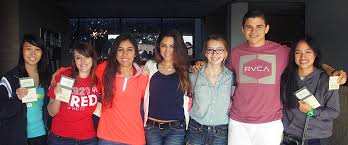

Motivation Factors towards Online Education
My Interest in this Course
The course that I apply for this year is Bachelor in Office Systems Management. I am very interested in the subjects for this course. It is including web design, human resources management and others. So, thats why my interest in this course can motivate me when I study online or online education that I will not give up and will not be tired. This is can achieve my interest in this course.
Parents Support
My parents' support was my second motivation for dealing with online education. They always supported me with words of encouragement for me to not give up and to continue to adapt to online learning. Without the support of my parents, I may not have the courage or the resolve to face this situation.
 The Influence of Classmates
The influence of my classmates that I can tell when I see them in a group in WhatApp group where they are so excited with these online education. In fact, when I said that I was about to give up on online learning, they influenced me with words of encouragement and said that they would help me and others in the some of a subject we were weak or slow to catch up with. I'm grateful to have them such a classmates.

Guidance by the Lecturers
I could not deny that, when students including me were in a dead end and give up with the online learning situation, the lecturers provided a great deal of guidance. Until today, my lecturers' efforts to ensure that their students have sufficient knowledge. So, they provide a variety of platforms for communicating with students in media sosial. This is what motivates me when I look at their efforts and guidance.
My life goal is to: Get excellent results for the final exams every semester and make proud of my parents.
Here is a quote from UK's website
Do the best you can, until you know better. Then when you know better, do better.
The UK was founded in 1707
Written by Nurul Najihah
2020964045
Bachelor in Office Systems Management (Hons)
Faculty of Business Management
UiTM Machang, Malaysia
This Cite was edited by Nurul Najihah Roslan in 2020
This text will be displayed from right to left